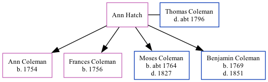

Ann Coleman (née Hatch)
[ Home ] | [ Calendar ] | [ Surnames Index ] | [ Family History ]Ann Hatch was the 5 times great-grandmother of <a href="I1.html">Nigel Horne</a> and married Thomas Coleman (with whom she had 4 children: <a href="I529.html">Ann</a>, <a href="I528.html">Frances</a>, <a href="I180.html">Moses</a> and <a href="I527.html">Benjamin</a>) in Brabourne, Kent, England on Apr 14, 1751<span class="citation">1</span>.
Children
- Ann was born in 1754
- Frances was born in 1756
- Moses was born c. 1764
- Benjamin was born in 1769
Citations
- Public Member Trees Online publication - Provo, UT, USA: The Generations Network, Inc., 2006.Original data - Family trees submitted by Ancestry members.Original data: Family trees submitted by Ancestry members.
Family Tree
Generated by Ged2Site. Last updated on Jul 20, 2025